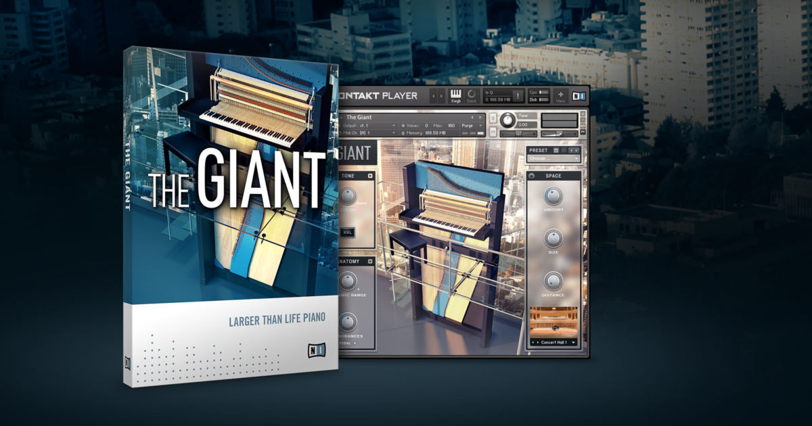
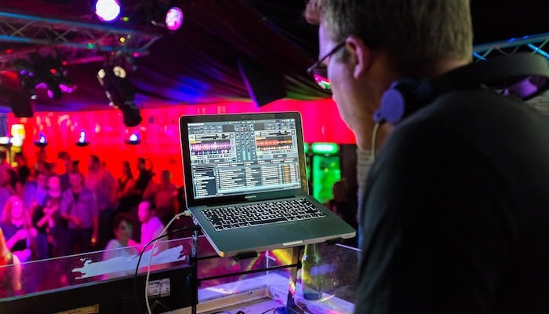
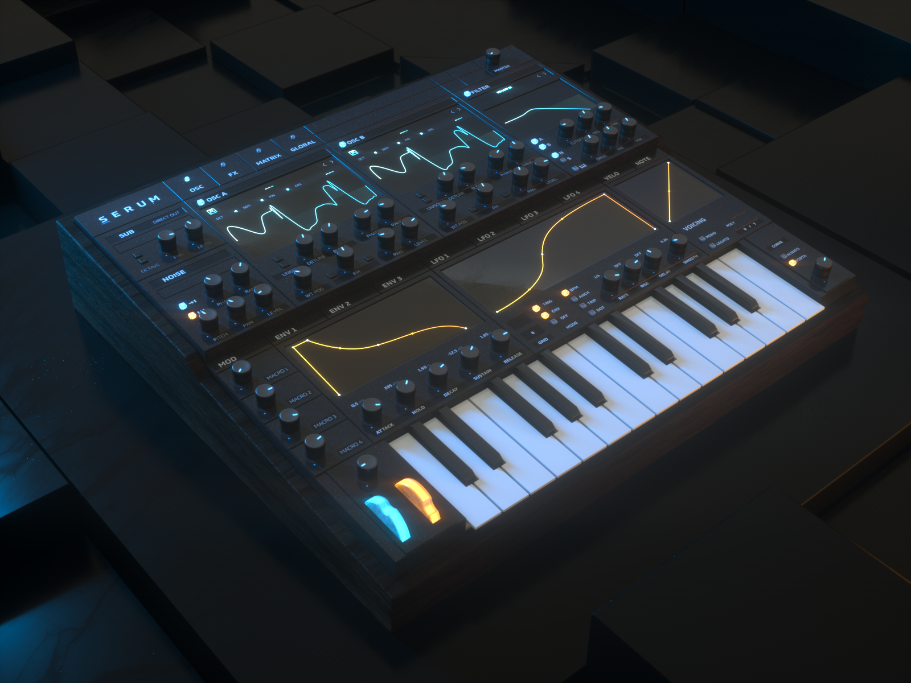
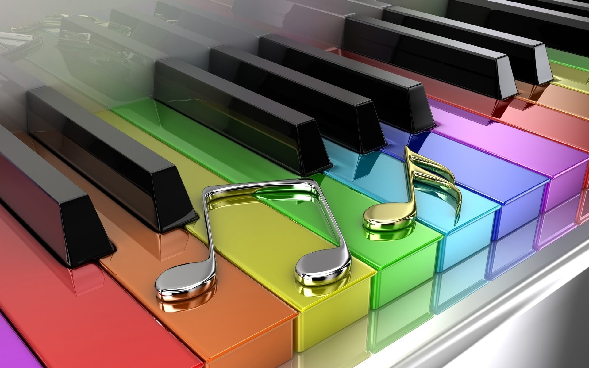
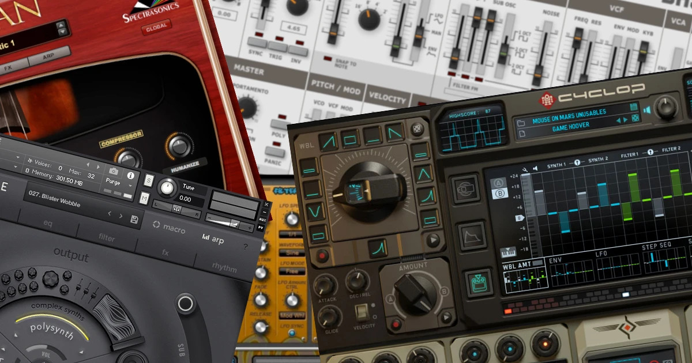

The 15 best free VST plugins of 2019
Audio production can be an expensive job, even if you go the virtual route with a digital workstation (DAW) and virtual instruments. Working with virtual Studio (VST) plugins is extremely convenient, but many of the best VST plugins are very expensive.
Armin Van Buuren Teaches Dance Music [2017, HDRip, ENG] - Video lesson

Audio production can be an expensive job, even if you go the virtual route with a digital workstation (DAW) and virtual instruments. Working with virtual Studio (VST) plugins is extremely convenient, but many of the best VST plugins are very expensive.
10 Best Laptops for Music Production 2019
With many more of us required to take our musical production work with us on the go, we
thought it was about time we had a look at the top ten best laptops for music production
in 2019.
For some, the specs on computer products can read like gibberish, and there is a lot of
misinformation out there which can confuse things further. In this technological age,
music production is increasingly becoming an accessible option for many of us musically
inclined folk.
Lesson on Serum. Review and analysis of all components
Today I will give you a so-called mini-course on the new synthesizer Xfer SERUM, its capabilities, characteristics and parameters. This unique synthesizer, with its release, has revolutionized and made a big leap in the virtual synthesis of sound, and especially in the table-wave synthesis, which is the synthesizer Serum. In this machine, the developers managed to literally everything: impressive appearance, simple interface, literal freedom in the modulation of any parameters, excellent sound quality and as a consequence of all this-huge synthesis possibilities!
How to pick up a melody by ear. Part one.

Probably, every beginner musician dreamed of learning to play any favorite melody on the fly. Experienced musicians know that this requires a lot of effort. At the beginning of training it seems that the notes "interfere" that it would be better to just do without them. And after a while you realize that they are our helpers, and to play "by ear" without music, much more difficult. Not all experienced performers are capable of this. But everyone can learn to pick up simple melodies.
How to learn to sing: 5 simple exercises and recommendations

Do you often think about how to learn to sing? Friendly meetings in a karaoke bar, family holidays, even ordinary weekdays when you are in a great mood, can not do without a song. Of course, to become an Opera diva or pop star without an experienced mentor will not work, but you can stop being shy and start singing for fun after a few independent trainings.
Piano is the best musical instrument
All tools are good in their own way. Each has its own unique timbre, its attractive features. But perhaps none of them can be compared to the piano - both in breadth, variety of possibilities, and in how universally it is used. There is no other musical instrument that has such an extensive solo literature, so as a soloist the piano comes first.
30 best VST synthesizers in modern music
Profile British magazine MusicRadar, who brought up more than one generation of talented producers and musicians published a list of the best synthesizer VST plug-ins from those that exist today. Yes, such ratings appear in the Network quite often, but the music software industry is developing so rapidly and dynamically that it is necessary to monitor the situation and summarize the results at least once a year. Needless to say, our rating is only three days. Moreover, it is compiled by Ben Rogerson himself-MusicRadar content Manager and top-class music lecturer. We here so, green youth. Modestly translate, adapt and step aside. Well, you, dear readers, welcome to the complex and fascinating world of music creation.